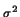
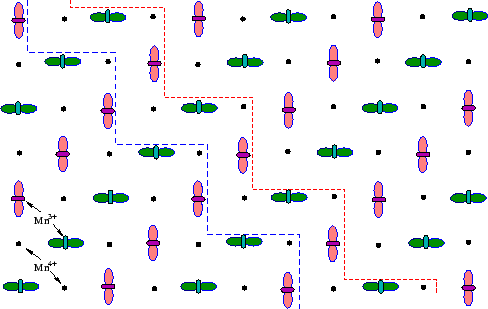
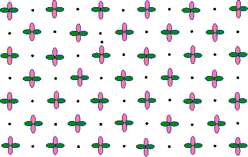

-r2 orbitals, (
In manganite systems close to 50% doping (Mn3.5+) charge and
orbital ordering is very common
[152,153,154,155]. This is
understood as an interplay between coulombic and lattice strain
degrees of freedom [99]. Charges disproportionate
towards Mn3+ and Mn4+ and form a lattice on every second
site. The occupied orbitals also order so as to lower the energy of
the system. In the cubic manganites the occupied orbital results in a
longer Mn-O bond as a result of the Jahn-Teller distortion. These
elongated
d3  = x, y, z), lay
down in a crystallographic plane (shown in
Fig. 4.4) and form a zig-zag pattern resulting in
the CE magnetic ordering arrangement
[152,156,154]. The simple,
semi-empirical, understanding for this behavior comes from the
Goodenough-Kanemori rules [81,82].
= x, y, z), lay
down in a crystallographic plane (shown in
Fig. 4.4) and form a zig-zag pattern resulting in
the CE magnetic ordering arrangement
[152,156,154]. The simple,
semi-empirical, understanding for this behavior comes from the
Goodenough-Kanemori rules [81,82].
|
 |
In common with the cubic manganites, CE charge and orbital-ordering is observed in this bi-layered compound close to 50% doping (nominal Mn3.5+ charge, in this case composition LaSr2Mn2O7) [153,154], appearing at 210 K on cooling. However, in contrast to the cubic manganites the ordering disappears again around 170K and the sample has an A-type antiferromagnetic insulating ground-state. A-type magnetic ordering is observed in undoped and lightly doped cubic manganites and consists of ferromagnetic planes that are antiferromagnetically coupled along the c-axis. In the undoped manganites this state is easily understood in the framework of the Goodenough-Kanemori (G-K) rules [81,157]. However, at the high doping levels of this sample it is inconsistent with these rules, as we discuss below.
The G-K rules give a simple road-map for understanding the diverse magnetic ground-states observed with changing doping in the manganite systems. It is assumed that charges reside in particular d-orbitals (and their associated covalent bonds with neighboring oxygen atoms). A particular orbital can then be considered as ``filled'' or ``empty'' (though in reality this disproportionation of charge will not be complete). The network of Mn ions is then considered. The Mn eg d-orbitals point towards neighboring Mn ions through the nearest neighbor oxygen ions. When two filled, or two empty, orbitals point towards each other the coupling is locally antiferromagnetic due to superexchange through a (nearly) 180o Mn-O-Mn bond. When a filled orbital points towards an empty one, double-exchange results in a local ferromagnetic interaction. The orbitals can then order to produce long-range magnetic order of different types according to these local interactions. For nominal Mn charge of 3.5, the G-K rules straightforwardly lead to the CE structure. The elongated, occupied, d3x2-r2 and d3y2-r2 orbitals form a zigzag chain with ferromagnetic correlations along the chain. Each zigzag chain is then coupled antiferromagnetically with its neighboring chain, and also with the chain residing in the layer above (refer to the OO cartoon representation shown in Fig. 4.4). In contrast, in the undoped cubic manganites the occupied d3x2-r2 or d3y2-r2 exist on every site and form into a checkerboard pattern. In this case, in the plane, a filled orbital always points towards an empty one resulting in 2-D ferromagnetic correlations in the plane (see Fig. 3.7). The orbitals pointing perpendicular to the plane are all empty d(x, y)2-z2 resulting in antiferromagnetic correlations between neighboring planes and therefore A-type antiferromagnetism.
The problem comes when one tries to explain A-type antiferromagnetism at 50% doping. Here we have to take these orbitals and tile a plane when half of the sites are Mn4+ in such a way as to have alternating filled and empty orbitals. In fact, it is possible if the electrons change their usual d(x, y)2-z2 orbital occupancy to dx2-y2. The MnO6 octahedron distorts due to the JT effect that breaks the degeneracy of the d3z2-r2 and the dx2-y2 eg orbitals (where x, y and z can be permuted depending on the orientation of the octahedron). In general, in the manganites the d3z2-r2 orbital is stabilized and becomes occupied and elongated. However, it is possible given different external perturbations, such as crystal field effects, that the dx2-y2 could become stabilized and the occupied orbital. This orbital forms bonds with four neighboring oxygens instead of two. When this is the occupied orbital we expect that there will be four long bonds and two short bonds and the octahedral distortion will be oblate instead of prolate. It also changes the relative number of filled and empty orbital pairs at constant charge. A-type antiferromagnetism at 50% doping is then predicted by the G-K rules if we tile the plane alternately with Mn3+ and Mn4+ ions and the filled dx2-y2 orbitals of the Mn3+ ions lie in the plane. Every site in the plane is then joined by a filled-to-empty orbital pair and therefore ferromagnetic correlations, as illustrated in Fig. 4.5.
|
 |
We have carried out local structural measurements using the atomic pair distribution function (PDF) analysis of neutron powder diffraction data on a sample of La2-2xSr1+2xMn2O7 with x = 0.54 as a function of temperature to investigate this orbital occupancy transition. The corresponding local structure response from oblate to prolate MnO6 octahedra transition is evidenced consistently. The PDF technique has proved to be capable of directly measuring the local JT distortion effects in both cubic and layered manganites [127,162].